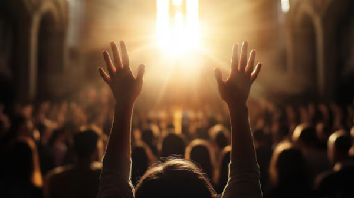

A nossa igreja está de portas abertas para receber você e sua família com muito amor e acolhimento. Venha conhecer um lugar onde a fé se fortalece, corações se unem e a presença de Deus é viva e transformadora. Aqui, buscamos viver em comunhão com o Senhor, compartilhando momentos de oração, louvor e aprendizado da Palavra. Independentemente de sua história, você é bem-vindo para fazer parte dessa caminhada espiritual e descobrir o propósito que Deus tem para sua vida. Juntos, somos uma comunidade que cresce em graça, esperança e amor.

Adoração
A adoração a Deus é uma expressão profunda de amor, reverência e entrega. Ela nos conecta diretamente ao Criador, nos lembrando de Sua grandeza, bondade e soberania. Ao adorarmos, reconhecemos que nossa vida depende Dele e que tudo o que temos vem de Suas mãos.
Santa Ceia
A Santa Ceia é um dos momentos mais sagrados da fé cristã. Instituída por Jesus na noite em que foi traído, ela representa o Seu sacrifício na cruz e a nova aliança entre Deus e a humanidade. Ao participar da Ceia, os cristãos não apenas relembram o corpo e o sangue de Cristo entregues por amor, mas também reafirmam sua comunhão com Ele e com a Igreja.
Esse ato é um memorial vivo que fortalece a fé, renova a esperança na volta de Jesus e convida à reflexão sobre a graça recebida. Mais do que um ritual, é uma expressão profunda de gratidão, obediência e unidade espiritual.